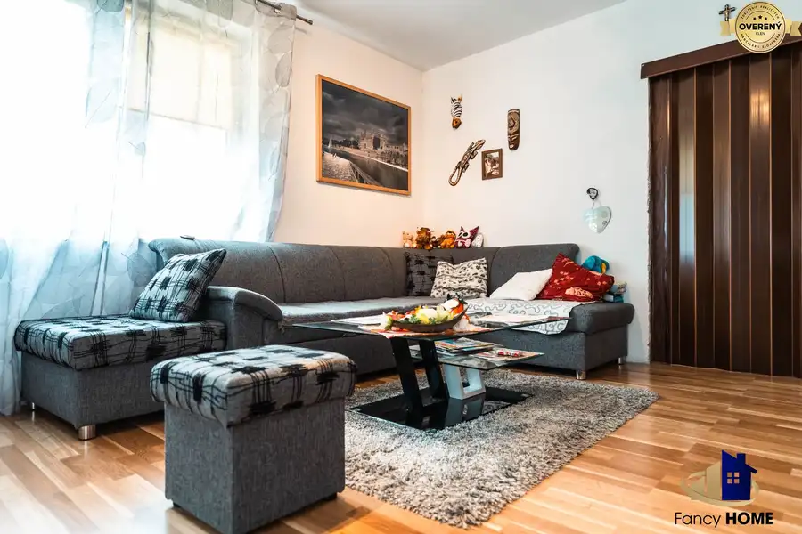
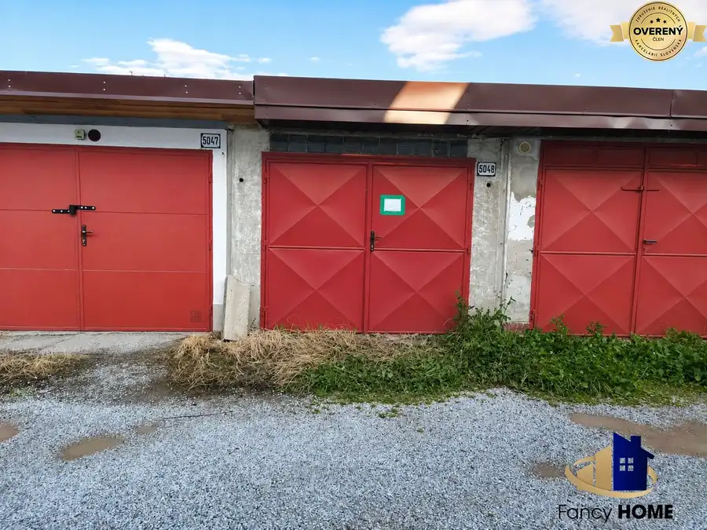
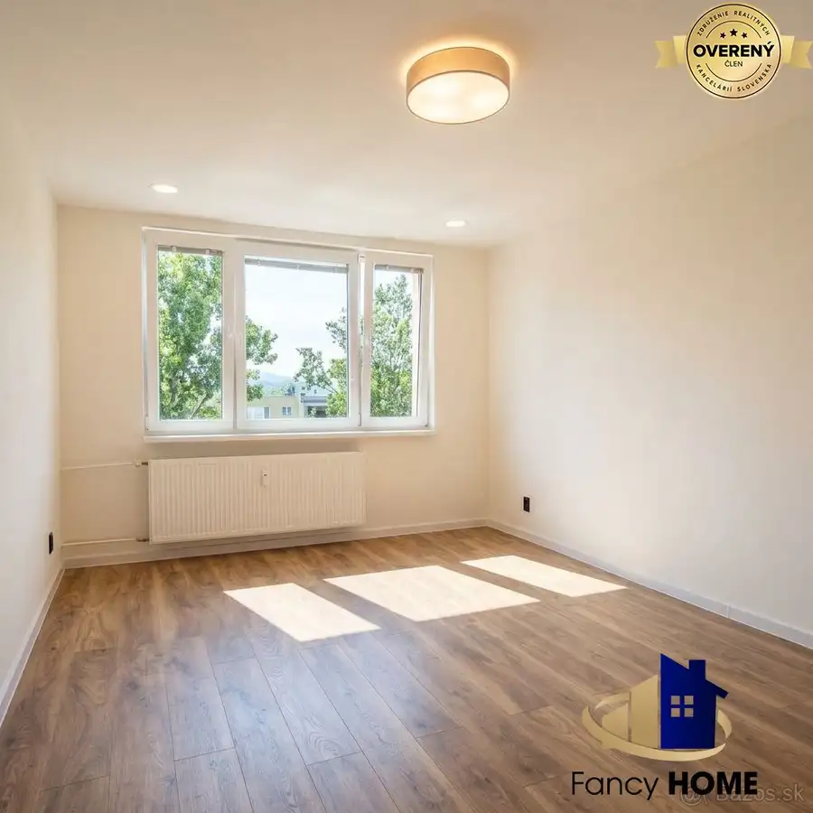

Moderný rodinný dom s terasou | pozemok 1 600 m2 | Jarabina
Jarabina
- Dispozícia5-izbový
- Plocha176 m²
- Poschodie0. z 1
- Stavčiastočne prerobený
- Vlastníctvoosobné
O nehnuteľnosti
Nie ďalší kompromis, ale miesto, kde sa ráno zobudíte a viete — toto bolo správne rozhodnutie.
Priestor. Pokoj. Slobodu. A výhľad, ktorý berie dych.
Predstavujeme vám rodinný dom v Jarabine — moderný, jednopodlažný dom s úžitkovou plochou 176 m² na veľkorysом pozemku 1 600 m². Slepá ulica na konci obce, iba jeden sused a výhľad do prírody, ktorý si zamilujete od prvého rána.
Toto nie je len nehnuteľnosť. Je to rozhodnutie zmeniť spôsob života celej rodiny.
Pre vaše deti:
Záhrada s výmerou, kde sa zmestí všetko — detské ihrisko, bazén, miesto na grilovanie aj tichý kút pre vás. Bezpečná slepá ulica, kde môžu deti jazdiť na bicykli alebo kolobežke bez toho, aby ste tŕpli pri každom zvuku motora. Dve samostatné nepriechodné detské izby s priamym vstupom na terasu — každé dieťa má svoj vlastný priestor, svoje súkromie a pocit, že má v dome svoje miesto.
Toto je detstvo, na ktoré sa spomína celý život.
Pre vás:
Predstavte si bežné ráno. Nie také, kde sa hneď od vstávania riešia kompromisy, hluk susedov a nedostatok miesta. Ale ráno, kde prvé kroky vedú na terasu. Kde je ticho. Kde je výhľad do záhrady a do prírody. Kde si môžete v pokoji vypiť kávu skôr, než sa rozbehne deň.
Rodičovská spálňa so šatníkom a priamym vstupom na terasu vám tento pocit dáva každý jeden deň. Nie raz za rok na dovolenke — ale doma.
Otvorená kuchyňa prepojená s obývačkou nie je len moderný dizajnový prvok. Je to spôsob, ako rodina skutočne funguje. Rodič varí, deti sú nablízku, rozhovor plynie prirodzene. Celý priestor je vzdušný, prepojený a smeruje priamo k terase a záhrade.
A po práci? Skutočný pokoj. Nie jeho ilúzia.
Smart dom, ktorý myslí aj na váš rozpočet:
Kúpa domu je veľké rozhodnutie. A múdra rodina sa nepýta len koľko stojí dom — ale koľko ich to bude stáť každý mesiac.
Práve tu má tento dom výnimočnú výhodu. Tepelné čerpadlo ako moderný a efektívny zdroj vykurovania. Podlahové kúrenie, ktoré rozvádza teplo rovnomerne po celom dome — bez studených zón, bez rušivých radiátorov. A 10 kW fotovoltaika, ktorá výrazne znižuje závislosť od externých dodávok energie. Všetko prepojené spolu s kamerovým systémom cez aplikáciu.
Tehlová stavba Heluz 44 cm so zateplením minerálnou vlnou na fasáde, podlahe aj strope zabezpečuje tepelný komfort v zime aj v lete. Kvalitná strecha Bramac Tegalit. Toto je dom postavený na desaťročia — nie na efekt.
Lokalita, ktorá dáva zmysel:
Jarabina nie je odstrihnutá od sveta. Škola, škôlka, potraviny aj MHD priamo v obci — všetko, čo rodina denne potrebuje, máte na dosah. Stará Ľubovňa je blízko — práca, nemocnica, obchody, všetko dostupné rýchlo a bez stresu. No keď prídete domov, mesto necháte za sebou. Záhrada, ticho a výhľad do prírody vás privítajú namiesto hluku ulice.
Južne orientovaný pozemok znamená svetlo počas celého dňa. Parkovanie pre viacero áut priamo pri dome a možnosť dobudovať garáž až pre tri autá.
Pre viac info, fotiek a detailov, skopírujte tento link :
https://fancyhomegroup.com/dominik-polancik/reality-dom-novostavba-jarabina/
Tento dom nie je pre každého.
Je pre rodinu, ktorá už vie, čo chce. Ktorá nechce riešiť kompromisy medzi mestom a pokojom. Ktorá chce deťom dopriať viac — viac priestoru, viac bezpečia, zdravšie prostredie.
Ak toto ste vy — tento dom na vás čaká.
Zavolajte a dohodnite si obhliadku.
Parametre
| Rozloha pozemku | 1600 m² |
|---|---|
| Zastavaná plocha | 273 m² |
| Úžitková plocha | 176 m² |
| Poschodie | prízemie |
| Počet poschodí | 1 |
| Počet izieb | 5 |
| Vlastníctvo | osobné |
| Stav | čiastočne prerobený |
| Odvoz odpadu | áno |
| Voda | studňa |
| El. napätie | 230/400V |
| Plyn | nie |
| Kanalizácia | ČOV |
| Internet | lokálny poskytovateľ |
| Kúpeľňa | vaňa a sprchovací kút |
| Vykurovanie | vlastné |
| Balkón | nie |
| Lódžia | nie |
| Terasa | áno - 2 |
| Postavené z | tehla |
| Zariadenie | čiastočne |
| Zateplený objekt | áno |
| Energetický certifikát | áno |
| Okná | plastové |
| Terén | mierny svah |
| Prístupová cesta | asfaltová cesta |
| Novostavba | áno |
| Dátum zverejnenia | 6. 6. 2026 |
Kde to je
Mohlo by Vás zaujímať

Rodinné domy10 148 580 €Predaj rodinný dom s pozemkom 1968 m2 | Holumnica okres Kežmarok Holumnica 3-izbový88 m² Útulný domček v srdci Holumnice, kde sa príroda stretáva s pohodlím a kde každý deň môžete začať s úsmevom na tvári. Tento dvojposchodový dom z roku…
Ostatné8 23 000 €Predaj garáž | 21 m² | Obrancov mieru, SL | TOP lokalita Stará Ľubovňa 21 m² Ing. Dominik Polančík z RK Fancy HOME Vám exkluzívne ponúka na predaj garáž vo vyhľadávanej lokalite na ulici Obrancov mieru v Starej Ľubovni.…
Byt4 Cena dohodouModerný 1,5-izbový byt na prenájom v Košiciach - Nad jazerom mestská časť Nad jazerom, Košice 1-izbový41 m²8. podlažie Ponúkame na prenájom moderný 1,5-izbový byt v obľúbenej lokalite Košice – Nad jazerom, ktorý je ideálny pre jednotlivca alebo pár hľadajúci komfortné…